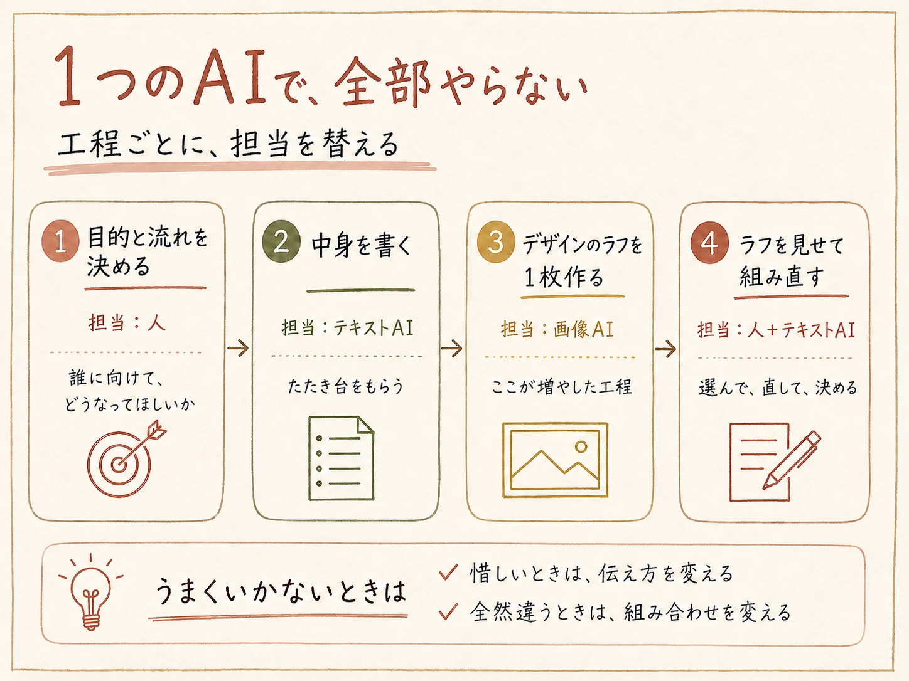

「AIを活用しましょう」と言われたとき、こう思いませんか。
この二つの問いは、どちらもAIから始まっています。AIを起点にすると、活用方法の一覧を見て、その中から自分に当てはまるものを探すことになります。数が多いわりに、自分の仕事とはなかなかつながりません。
私は普段からAIを使うほうですが、差があるとすれば、スキルではなく考え方だと思っています。やっているのは、逆の順番です。AIではなく、自分の業務を起点にする。「何をしたいか」を先に決めて、そこから「それをAIでどう実現するか」を考えています。
ここでいう「やりたいこと」は、新しく何かを始めることではありません。新しいことを始めようとすると、それ自体が負担になってしまいます。今やっている作業の目的を、もっと効果的に、もっと効率よく達成できないか。考えるのはそれだけです。
今回は、その考え方をもとに、実際にどう考えたかを「1つの作業」「組み合わせ」「事例」の3つに分けて書きます。読み終えたときに、「で、どうすればいいの」で止まることが減っていればと思います。
前提できることは、使う人によって変わる
私は、「AIは基本的に何でもできる」と思っています。
そう思うのは、AIが「何かを渡すと、それに合ったものを返してくれるもの」だからです。渡し方を変えれば、返ってくるものも変わるので、欲しい形に寄せていけます。
一つで足りなければ、要素に分けて、それぞれに合うものへ渡せばいい。例えば解説動画のように複雑なものも、台本、画像、音声、編集といった要素に分解します。一つのAIでできるところはそのまま使い、足りないところに別のツールを足します。
なので、活用方法の一覧から探すのが唯一の入口ではありません。私は先にゴールを決めて、そこまでに必要な工程を考えて、それに合うものを選んでいます。
その選び方が分からないときは、聞いてしまいます。やったことのないことなら、できるかどうかも自分で決めません。
「〜をしたいんだけど、これができるAIってある？」
「〜という条件で、おすすめのAIや定番のAIを教えてほしい」
「基本的に何でもできる」と思っていると、自然と「何をしたいか」から考えるようになります。
ぜひ、今やっている作業の中で、「これ、面倒だな」「毎回同じことをやっているな」「これができたらいいのに」と思っているものを一つ思い浮かべてみてください。AIでできるかどうかは、この時点では考えなくて大丈夫です。
仕事のことでなくても構いません。むしろ最初は、趣味のことでもいいと思います。業務でいきなり使おうとすると、失敗できないぶん、手が止まりやすいからです。
全体像考えることは1つ、切り口は3つ
考えることは1つだけです。「どうすれば、もっと効果的に、もっと効率よくできるか」。その答えを探す切り口が、3つに分かれます。上から順に試すものだと思ってください。「1つの作業」で足りれば、そこで終わりです。足りなければ「組み合わせ」、思いつかなければ「事例」。どれを使うかは、やってみてから決まります。
ここからは、「AIでPowerPointを作りたい」を例に、実際に何をどう考えたかを書きます。先ほど思い浮かべたものに置き換えながら、読んでみてください。
1つの作業効率よく、効果的にするには
いきなり「AIでどうやるか」を考えると、AIの機能に発想が引っ張られて、アイデアが広がりません。先に考えるのは、どうすればその目的をうまく達成できるかです。この時点では、AIをどう使うかは考えません。
まず整理するのは、最終的にどういう状態になっていればいいかです。毎回同じことをしていたり、面倒だと思っているなら、どこに手間がかかっていて、それがどうなればいいのか。もっと良くしたいなら、今の何が引っかかっているのか。
コツは一つだけです。自分のスキルや知識を、いったん計算に入れないこと。
新しくやることに限りません。普段やっている作業でも、「どうすればもっとうまくできるんだろう」の答えが、自分のスキルや知識の範囲にあるとは限らないからです。
効率の面でも同じです。自分がやる前提で考えてしまうと、AIの性能を最大限引き出せなくなってしまいます。元にあるものと、最終的にどうなっていてほしいか。それだけ決めて、あいだの進め方はまるごと任せる。それくらいのつもりで考えています。
「自分は文章が苦手だから」「デザインができないから」「自分でやったほうが早いから」と先に線を引くと、そこで発想が止まります。考えるのは、「どうなっていれば良いか」だけです。
資料作成なら、「読み手の関心がどう動くか」を踏まえて構成を組む。AIを使っても、ここは変わりません。
私が自分で決めたのは、二つだけです。誰に向けたもので、読み終えたときにどうなっていてほしいか。それと、全体をどういう流れで見せるか。手法をいくつか知っていたので、それを使いました。
実のところ、「研修をするので、資料の流れを考えて」といったシンプルな指示でも、それっぽいものは作れます。ただ、AIが作ったもの自体は良くても、目的には沿っていない。それでは意味がありません。
だから、「この目的を達成するには、どういう情報が必要なのか」を、先に設計してから指示を出します。最終的なアウトプットをどうしたいのか。その抽象的な部分は、自分で持っています。
分からないときの二つの手
どういう要素が必要なのか、そもそも分からないこともあります。経験のない領域なら、そのほうが普通です。
一つは、調べること。 AIに聞いてしまえば早いです。ただ、聞く前に「そもそも今、何をしているんだっけ」「この作業の目的は何だっけ」と確認します。目的を整理したうえで、それを達成するために効果的な手段や方法は何か、そのやり方を聞きます。
いきなり「資料作成のコツ」を調べると、目的とは関係のない、上手いやり方まで集まってしまいます。
調べるのは、AIの使い方よりも、その作業自体のやり方です。まずは、業界で実際に使われている工程や技法。さらに、自分や周囲ではあまり知られていなくても、研究や実務を通じて有効性が確認されている方法があるかもしれません。
もう一つは、分からないまま渡してしまうこと。 「目指したい状態」と「今の状態」。その二つを書いて、「どこに問題がありそうか、どうすればいいか」を聞きます。理想と現状を整理できれば、問題の特定と改善策はAIに提案してもらえます。
任せる部分
ここまでは、AIをどう使うかを考えていません。やり方が決まってから、そのどこをAIに任せるかを考えます。
私が任せたのは、そこから先です。どういう感じで書きたいかだけを整理して渡し、あとの部分はいい感じに補完してもらう。そうやって下書きを作ってもらっています。「この部分は、こういうスライドにしたい」とだけ添えて、細かい中身までは書きませんでした。
「こういうものを作りたい」という大枠だけを決めて、具体的な書き方や詳しい内容はAIに書いてもらう。そのほうが早いです。クオリティは、出てきたものを見ながら「ここはこうしたい」を足していくところで上げます。
自分以外の視点で見てもらうのも、任せている部分です。手法を知っていても、自分で書いたものがそのとおりになっているかは、自分では判断しにくい。ズレが見えないからです。
「〜という目的で、〜に向けて作っていて、今は〜という構成になっているんだけど、構成や具体的な内容についてどう思う？」
ここでも、前提を先に渡します。目的に照らして判断してもらうためです。
返ってきた提案は、そのまま全部使うのではなく、選んで取り入れました。知識があるほど的確に選べますが、知識がなくても始められます。
組み合わせ何を使って、どう分けるか
「1つの作業」のやり方で試していると、「惜しいな」で止まることと、「全然違うな」が続くことに分かれます。惜しいなら、伝え方を変えれば、だいたい解決します。何度か条件を変えても全然違うままなら、そもそも、その作業がそのAIに向いていないのかもしれません。そのときは、指示ではなく、組み合わせのほうを変えます。
私の場合、Claudeで「何を書くか」を整理してもらって、そのままPowerPointまで作らせようとしました。ただ、指示を細かく変えても、配置や色味があまり良くなりません。微調整を重ねても変わらないので、伝え方の問題ではなさそうでした。
そこで、「デザインの下書きだけ、別で作れないか」と考えました。画像生成でラフを1枚作り、それを見せながら組み直す。工程を一つ増やしただけで、そのまま使える形になりました。

組み合わせといっても、大がかりなものとは限りません。今の作業に何を足すか、何を分けるか。それだけでも組み合わせです。
「〜したいんだけど、どういうツールや手段を使って、どんな流れにするのがいいかな？」
事例誰かがすでにやっていないか
「1つの作業」と「組み合わせ」は、自分の中で考える作業です。思いつくものがないと、そこで止まってしまいます。
思いつかないときは、調べます。調べる対象は、AIに何ができるかではありません。同じことをやった人が、どうやったかです。
「AIを使って〜したいんだけど、実際にやった人の事例を調べて。どういう手順で、何を使ったのかを知りたい」
この記事を書くときに、実際に調べてみました。
出てきた事例に共通していたのは、次のような流れです。
作る
確定する
作る
大枠は、私がやっていた方法と同じでした。ただ一つ違ったのは、構成をAIに作らせていることです。私は先に自分で流れを決めてから渡していました。手持ちの型があるかないかで入口が変わるだけで、最後に構成を決めるのが人という点は同じです。つまり、自分が何を持っているかで、任せる範囲を変えられます。
確認できたのは、自分の判断が妥当だったことだけではありません。
一つは、検討すらしていなかった選択肢が見つかったこと。もう一つは、いきなり全部を作らず、「同じ原稿で数枚だけ作って比べる」という進め方です。これは、私にはなかった発想でした。
調べれば、ある程度妥当なやり方が手に入ります。自分の判断の裏が取れて、自分にはなかった発想も見つかり、任せ方を変える余地も見えてくる。
ここまでは、「人がどうやったか」を調べる話でした。AIそのものを調べたくなったときは、情報の細かさに気をつけてください。
AIごと、モデルごとの性能差や、「こんな作業に使えます」という活用方法の一覧を調べると、量が多すぎて、かえって手が止まります。それよりも、世の中にどんなAIがあるのかを、大まかに見ておくほうが効果的です。
非エンジニアでも、AIと会話しながら簡単なアプリやツールを作り、作業を効率化することが選択肢に入るようになっています。
私も詳しいわけではありませんが、これくらいで十分だと思っています。やりたいことが決まったときに、手段の候補として動画や音楽が浮かぶかどうかは、ここで決まります。知らなければ、その選択肢は最初から存在しないからです。
まとめできるかどうかは、自分で決めなくていい
いちばんもったいないのは、「AIにそんなことができるわけない」と自分で判断して、聞かずに終わることだと思っています。
できるかどうかは、
AIが答えます。
やってみるときのプロセス
この手順は、最初に挙げた3つの切り口と対応しています。手順3と4が「1つの作業」、手順5が「組み合わせ」、手順6が「事例」です。
3つは、並べて選ぶものというより、上から順に試すものです。一つのAIでできる範囲で考えるのが「1つの作業」、それで足りないときに何を足すかが「組み合わせ」、「1つの作業」も「組み合わせ」も思い浮かばないときに調べるのが「事例」にあたります。
全部やる必要はありません。手順4で終わることも多いです。
「これ、AIでうまくやる方法ないかな」くらいの軽さで十分です。
何度か試していると、AIに何ができるかの解像度が勝手に上がっていきます。そうなると今度は、「あの作業でも使えるんじゃないか」「こういう使い方もできるんじゃないか」が、自分から出てくるようになります。